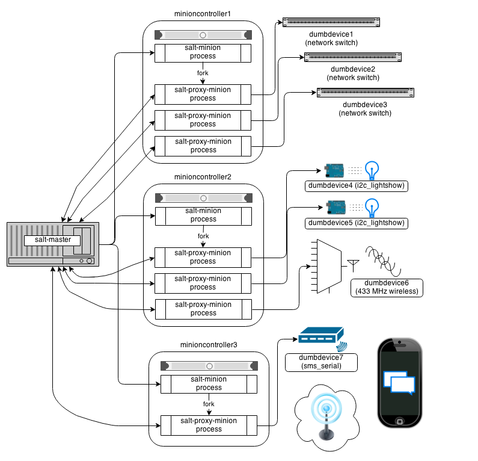

Proxy minions are a developing Salt feature that enables controlling devices that, for whatever reason, cannot run a standard salt-minion. Examples include network gear that has an API but runs a proprietary OS, devices with limited CPU or memory, or devices that could run a minion, but for security reasons, will not.
Proxy minions are not an "out of the box" feature. Because there are an infinite number of controllable devices, you will most likely have to write the interface yourself. Fortunately, this is only as difficult as the actual interface to the proxied device. Devices that have an existing Python module (PyUSB for example) would be relatively simple to interface. Code to control a device that has an HTML REST-based interface should be easy. Code to control your typical housecat would be excellent source material for a PhD thesis.
Salt proxy-minions provide the 'plumbing' that allows device enumeration and discovery, control, status, remote execution, and state management.
The following diagram may be helpful in understanding the structure of a Salt installation that includes proxy-minions:
The key thing to remember is the left-most section of the diagram. Salt's nature is to have a minion connect to a master, then the master may control the minion. However, for proxy minions, the target device cannot run a minion, and thus must rely on a separate minion to fire up the proxy-minion and make the initial and persistent connection.
After the proxy minion is started and initiates its connection to the 'dumb' device, it connects back to the salt-master and ceases to be affiliated in any way with the minion that started it.
To create support for a proxied device one needs to create four things:
Proxy minions require no configuration parameters in /etc/salt/master.
Salt's Pillar system is ideally suited for configuring proxy-minions. Proxies can either be designated via a pillar file in pillar_roots, or through an external pillar. External pillars afford the opportunity for interfacing with a configuration management system, database, or other knowledgeable system that that may already contain all the details of proxy targets. To use static files in pillar_roots, pattern your files after the following examples, which are based on the diagram above:
/srv/salt/pillar/top.sls
base:
minioncontroller1:
- networkswitches
minioncontroller2:
- reallydumbdevices
minioncontroller3:
- smsgateway
/srv/salt/pillar/networkswitches.sls
proxy:
dumbdevice1:
proxytype: networkswitch
host: 172.23.23.5
username: root
passwd: letmein
dumbdevice2:
proxytype: networkswitch
host: 172.23.23.6
username: root
passwd: letmein
dumbdevice3:
proxytype: networkswitch
host: 172.23.23.7
username: root
passwd: letmein
/srv/salt/pillar/reallydumbdevices.sls
proxy:
dumbdevice4:
proxytype: i2c_lightshow
i2c_address: 1
dumbdevice5:
proxytype: i2c_lightshow
i2c_address: 2
dumbdevice6:
proxytype: 433mhz_wireless
/srv/salt/pillar/smsgateway.sls
proxy:
minioncontroller3:
dumbdevice7:
proxytype: sms_serial
deventry: /dev/tty04
Note the contents of each minioncontroller key may differ widely based on the type of device that the proxy-minion is managing.
In the above example
Because of the way pillar works, each of the salt-minions that fork off the proxy minions will only see the keys specific to the proxies it will be handling. In other words, from the above example, only minioncontroller1 will see the connection information for dumbdevices 1, 2, and 3. Minioncontroller2 will see configuration data for dumbdevices 4, 5, and 6, and minioncontroller3 will be privy to dumbdevice7.
Also, in general, proxy-minions are lightweight, so the machines that run them could conceivably control a large number of devices. The example above is just to illustrate that it is possible for the proxy services to be spread across many machines if necessary, or intentionally run on machines that need to control devices because of some physical interface (e.g. i2c and serial above). Another reason to divide proxy services might be security. In more secure environments only certain machines may have a network path to certain devices.
Now our salt-minions know if they are supposed to spawn a proxy-minion process to control a particular device. That proxy-minion process will initiate a connection back to the master to enable control.
A proxytype is a Python class called 'Proxyconn' that encapsulates all the code necessary to interface with a device. Proxytypes are located inside the salt.proxy module. At a minimum a proxytype object must implement the following methods:
proxytype(self): Returns a string with the name of the proxy type.
proxyconn(self, **kwargs): Provides the primary way to connect and communicate with the device. Some proxyconns instantiate a particular object that opens a network connection to a device and leaves the connection open for communication. Others simply abstract a serial connection or even implement endpoints to communicate via REST over HTTP.
id(self, opts): Returns a unique, unchanging id for the controlled device. This is the "name" of the device, and is used by the salt-master for targeting and key authentication.
Optionally, the class may define a shutdown(self, opts) method if the controlled device should be informed when the minion goes away cleanly.
It is highly recommended that the test.ping execution module also be defined for a proxytype. The code for ping should contact the controlled device and make sure it is really available.
Here is an example proxytype used to interface to Juniper Networks devices that run the Junos operating system. Note the additional library requirements--most of the "hard part" of talking to these devices is handled by the jnpr.junos, jnpr.junos.utils and jnpr.junos.cfg modules.
# Import python libs
import logging
import os
import jnpr.junos
import jnpr.junos.utils
import jnpr.junos.cfg
HAS_JUNOS = True
class Proxyconn(object):
def __init__(self, details):
self.conn = jnpr.junos.Device(user=details['username'], host=details['host'], password=details['passwd'])
self.conn.open()
self.conn.bind(cu=jnpr.junos.cfg.Resource)
def proxytype(self):
return 'junos'
def id(self, opts):
return self.conn.facts['hostname']
def ping(self):
return self.conn.connected
def shutdown(self, opts):
print('Proxy module {} shutting down!!'.format(opts['id']))
try:
self.conn.close()
except Exception:
pass
Grains are data about minions. Most proxied devices will have a paltry amount of data as compared to a typical Linux server. Because proxy-minions are started by a regular minion, they inherit a sizeable number of grain settings which can be useful, especially when targeting (PYTHONPATH, for example).
All proxy minions set a grain called 'proxy'. If it is present, you know the minion is controlling another device. To add more grains to your proxy minion for a particular device, create a file in salt/grains named [proxytype].py and place inside it the different functions that need to be run to collect the data you are interested in. Here's an example:
Salt states and execution modules, by and large, cannot "automatically" work with proxied devices. Execution modules like pkg or sqlite3 have no meaning on a network switch or a housecat. For a state/execution module to be available to a proxy-minion, the __proxyenabled__ variable must be defined in the module as an array containing the names of all the proxytypes that this module can support. The array can contain the special value * to indicate that the module supports all proxies.
If no __proxyenabled__ variable is defined, then by default, the state/execution module is unavailable to any proxy.
Here is an excerpt from a module that was modified to support proxy-minions:
def ping():
if 'proxyobject' in __opts__:
if 'ping' in __opts__['proxyobject'].__attr__():
return __opts['proxyobject'].ping()
else:
return False
else:
return True
And then in salt.proxy.junos we find
def ping(self):
return self.connected
The Junos API layer lacks the ability to do a traditional 'ping', so the example simply checks the connection object field that indicates if the ssh connection was successfully made to the device.
Current Salt release: 2014.1.4
Docs for previous releases on salt.rtfd.org.
Community Projects That Use Salt